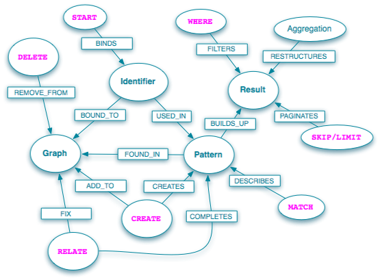

Cypher is the declarative query language for Neo4j, the world’s leading graph database.
-
Cypher matches patterns of nodes and relationship in the graph, to extract information or modify the data.
- Cypher has the concept of identifiers which denote named, bound elements and parameters.
- Cypher can mutate graph data by creating, updating, and removing nodes, relationships, and properties.
You can try cypher snippets live in the Neo4j Console at http://console.neo4j.org.
| Read-Only Query Structure |
|---|
START me=node:people(name='Andres') |
| START | Meaning |
|---|---|
| START n=node(id,[id2,id3]) | Load the node with id id into n |
|
START n=node:indexName( key="value") |
Query the index for an exact value and put the result into n Use node_auto_index for the auto-index |
|
START n=node:indexName( "lucene query") |
Query the index using a full Lucene query and put the result in n |
|
START n=node(*) |
Load all nodes |
|
START m=node(1), n=node(2) |
Multiple start points |
| RETURN | Meaning |
|---|---|
|
RETURN * |
Return all named nodes, relationships and identifiers |
|
RETURN expr AS alias |
Set result column name as alias |
|
RETURN distinct expr |
Return unique values for expr |
| MATCH | Meaning |
|---|---|
|
MATCH n-->m |
A pattern where n has outgoing relationships to another node, regardless of the relationship type |
|
MATCH n-->m<--o |
A pattern with n having an outgoing relationship to m, and m having incoming relationship from o |
|
MATCH p=n-->m<--o |
Store the path going from n to o over m into the path identifier p |
|
MATCH p = shortestPath( n-[:KNOWS*3]->m ) |
Find the shortest path between n and m of type KNOWS of at most length 3 |
|
MATCH p = allShortestPaths( n-[:KNOWS*3]->m ) |
Find all the shortest paths between n and m of type KNOWS of at most length 3 |
|
MATCH n--m |
n has relationship in any direction to m |
|
MATCH n-[:KNOWS]->m |
The outgoing relationship between n and m has to be of KNOWS relationship type |
|
MATCH n-[:KNOWS|LOVES]-m |
n has KNOWS or LOVES relationship to m |
|
MATCH n-[r]->m |
An outgoing relationship from n to m, and store the relationship in r |
|
MATCH n-[r?]->m |
The relationship is optional |
|
MATCH n-[*1..5]->m |
A multi step path between n and m of one to five steps away |
|
MATCH n-[*]->m |
A pattern where n has a relationship to m unbound number of steps away |
|
MATCH n-[?:KNOWS*..5]->m |
An optional relationship between n and m that is of KNOWS relationship type, and between one and five steps long. |
| Read-Write-Return Query Structure |
|---|
START emil=node:people(name='Emil') |
| CREATE | Meaning |
|---|---|
| CREATE n={name :"Name" } CREATE (n {name :"Name" }) | Creates the node with the given properties |
| CREATE n = {map} | Creates node from map parameter |
| CREATE n = {manyMaps} | Creates many nodes from parameter with coll of maps |
| CREATE n-[:KNOWS]->m | Creates the relationship with the given type and direction |
| CREATE (n {name:'Andres'})- [:KNOWS {since: 2007}] ->m | Creates the relationship with the given type, direction & properties |
| DELETE | Meaning |
|---|---|
|
DELETE n DELETE rel |
Deletes the node, relationship |
| DELETE n.prop | Removes the property |
| CREATE UNIQUE | Meaning |
|---|---|
| CREATE UNIQUE n-[:KNOWS]->m | Tries to match the pattern. creates the missing pieces if the match fails |
| CREATE UNIQUE n-[:KNOWS]->(m {name:"Name"}) | Tries to match a node with the property name set to "Name". creates the node and sets the property if it can't be found |
| CREATE UNIQUE n-[:LOVES {since: 2007}]->m | Tries to find the relationship with the given type, direction and attributes, creates it if not found |
| SET | Meaning |
|---|---|
| SET n.prop = value | Updates or creates the property prop with the given value |
| SET n = {map} | Updates the properties with the given map parameter |
| SET n.prop = null | Deletes the property prop |
| Predicates | Meaning |
|---|---|
|
NOT pred1 AND/OR pred2 |
Boolean operators for predicates |
|
ALL(x in coll : pred) |
TRUE if pred is TRUE for all values in coll |
|
ANY(x in coll : pred) |
TRUE if pred is TRUE for at least one value in coll |
|
NONE(x in coll : pred) |
TRUE if pred returns FALSE for all values in coll |
|
SINGLE(x in coll : pred) |
TRUE if pred returns TRUE for a single value in coll |
|
identifier IS NULL |
TRUE if identifier is NULL |
|
n.prop? = value |
TRUE if n.prop = value or n is NULL or n.prop does not exist |
|
n.prop! = value |
TRUE if n.prop = value, FALSE if n is NULL or n.prop does not exist |
|
n =~ /regexp/ |
Regular expression |
|
e1 <> e2, e1 < e2, e1 = e2 |
Comparison operators |
|
has(n.prop) |
Checks if property exists |
|
n-[:TYPE]->m |
Filters on existence of relationship |
| expr IN coll Content for td |
Checks for existence of expr in coll |
| Expressions | Meaning |
|---|---|
|
[a-zA-Z0-9_], 'some na-me' |
allowed identifiers (or quoted) |
|
n + / - * % m |
Arithmetic operators, "+" also works on strings and collections |
|
[42,"Hello",'World', {p}] |
A collection |
|
{param} |
Parameter value, passed into the query execution as map {param: "value",... } |
|
a-->()<--b |
A path pattern |
| Functions | Meaning |
|---|---|
|
HEAD(coll) |
First element of coll |
|
TAIL(coll) |
coll except first element |
|
LAST(coll) |
Last element of coll |
|
TYPE(rel) |
relationship type of rel |
|
ID(node) ID(relationship) |
id of node or relationship |
|
COALESCE(expr, default) |
Returns default if expr is null otherwise expr |
|
RANGE(start,end [,step]) |
Creates a range from start to end (inclusive) with a optional step |
|
ABS(v) ROUND(v) SQRT(v) SIGN(v) |
Math functions |
| Path functions | Meaning |
|---|---|
|
NODES(path) |
Returns the nodes in path |
|
RELS(path) |
Returns the relationships in path |
|
LENGTH(path) |
Returns the length of path |
| Aggregate functions | Meaning |
|---|---|
|
COUNT([distinct] expr) |
Returns the number of non-null values in expr |
|
COUNT(*) |
Returns the number of values aggregated over |
|
SUM(expr) |
Returns the sum of all values in expr. Throws exception for non-numeric values |
|
AVG(expr) |
Returns the average of all values in expr |
|
MAX(expr) |
Returns the largest value in expr |
|
MIN(expr) |
Returns the smallest values in expr |
|
COLLECT(expr) |
Returns an coll containing all values in expr |
|
FILTER( x in coll : predicate ) |
Returns a all the elements in coll that match the given predicate |
|
EXTRACT( x in coll : expr) |
Applies the expression once for every element in coll |
FOREACH
FOREACH is used to execute a modifying operation for each element of a coll, e.g. creating a node for each element using the element as an attribute value.
START user=node:users("name:A*"), promotion=node(...)
MATCH user-[:FRIEND]-friend-[:FRIEND]-foaf
WITH user, collect(distinct foaf) as new_friends
FOREACH (friend in new_friends : create user<-[:SUGGESTION]-friend)
WITH
WITH syntax is similar to RETURN. It separates query parts explicitly, allowing you to declare which identifiers to carry over to the next part. This can be used to limit the visible identifiers but mostly for creating aggregate values that can be used in the next query part either for filtering (implementing the Cypher equivalent of HAVING) or for the creation of new structures in the graph.
WITH also creates a boundary between reading and updating query parts so that they don't interfere.
START user=node:users("name:A*")
MATCH user-[:FRIEND]-friend
WITH user, count(friend) as friends
WHERE friends > 10
RETURN userSTART user=node:users("name:A*")
MATCH user-[:FRIEND]-friend
WITH user, count(friend) as friends
SET user.numberOfFriends = friends
Transactions
The Neo4j-Shell supports commands to begin transactions, which allows you issue multiple commands and then only commit them when you're satisfied and rollback if you ran into an issue or don't want your changes to happen.
neo4j-sh (0)$ begin
==> Transaction started
neo4j-sh (0)$ rollback
==> Transaction rolled back
neo4j-sh (0)$ commit
==> Transaction committed
How to create a complex (complete) graph
A root node is created, and used to hang a number of nodes from. I then match two nodes hanging from the center, with the requirement that the id of the first be less than the id of the next. This is to prevent double relationships and self relationships. Using said match, I create relationships between all the nodes Last comes the cheat - I remove the center node and all relationships connected to it.

Live Test
CREATE center
FOREACH( x in range(1,10) :
CREATE leaf={count : x}, center-[:X]->leaf
)
WITH center
MATCH leaf1<--center--<leaf2
WHERE id(leaf1)<id(leaf2)
CREATE leaf1-[:X]->leaf2
WITH center
MATCH center-[r]->()
DELETE center,r;
Useful Snippets
Not already connected to
START n=node(...)
MATCH n-->m-->o
WHERE not ( n-->o )
RETURN o
This returns nodes that m is connected to, that n is not already connected to.
Find Cycles
START n=node(...)
MATCH path = n-[*..5]-n
RETURN n, length(path)
This returns nodes that have relationships looping back to themselves in no more than five hops, and the length of that loop.
Group Count Relationship Types
START n=node(...)
MATCH n-[r]-m
RETURN type(r), count(*)
Returns a count of each of the relationship-types.
Delete node with relationships
START n=node(...)
MATCH n-[r?]-()
DELETE n,r
Finds the node and all relationships (if any) and deletes node and relationships.
String concatenation on expressions
START n = node(1), m = node(2)
RETURN n.name +" and "+ m.nam
References
Screencast http://video.neo4j.org
Reference Manual: http://docs.neo4j.org/
Presentations: http://www.slideshare.net/tag/cypher
